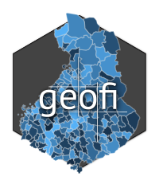

Fetch Maastotietokanta Collections
Source:R/ogc_api_nls.R
ogc_get_maastotietokanta_collections.RdRetrieves a list of available collections from the Maastotietokanta (Topographic Database) OGC API, including their titles and descriptions.
Usage
ogc_get_maastotietokanta_collections(api_key = getOption("geofi_mml_api_key"))Arguments
- api_key
Character. API key for authenticating with the Maastotietokanta OGC API. Defaults to the value stored in
options(geofi_mml_api_key). You can obtain an API key from the Maanmittauslaitos (National Land Survey of Finland) website.
Value
A data frame with two columns:
id: The title of each collection.description: A brief description of each collection.
Details
This function queries the Maastotietokanta OGC API to retrieve metadata about
available collections of spatial data. The API is provided by the National Land
Survey of Finland (Maanmittauslaitos). The function requires a valid API key,
which can be provided directly or set via options(geofi_mml_api_key).
The function includes error handling:
It retries failed requests up to 3 times for transient network issues or server errors (HTTP 500–599) with exponential backoff.
It handles rate limits (HTTP 429) by respecting the
Retry-Afterheader.It validates the API response to ensure the expected data is present.
See also
https://www.maanmittauslaitos.fi/en/rajapinnat/api-avaimen-ohje for more information on the Maastotietokanta OGC API and how to obtain an API key.
Examples
if (FALSE) { # \dontrun{
# Set your API key
options(geofi_mml_api_key = "your_api_key_here")
# Fetch the list of collections
collections <- ogc_get_maastotietokanta_collections()
print(collections)
# Alternatively, provide the API key directly
collections <- ogc_get_maastotietokanta_collections(api_key = "your_api_key_here")
print(collections)
} # }